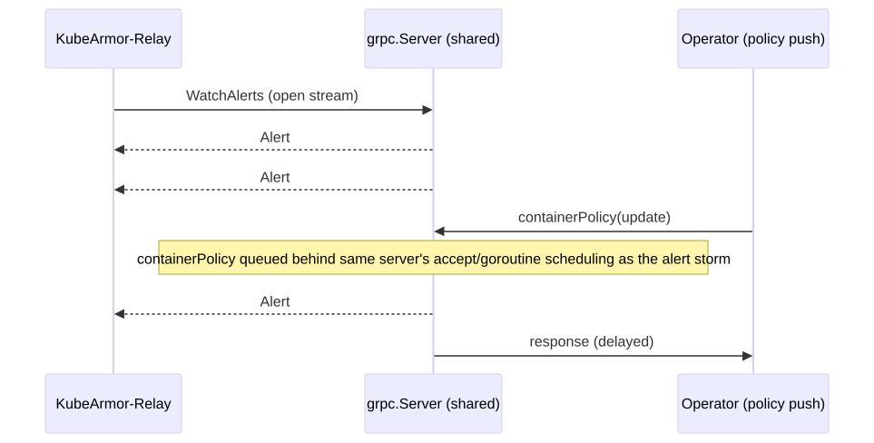
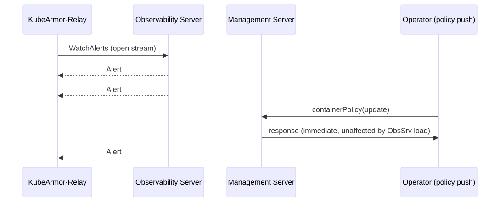

A research-backed proposal to split KubeArmor's single, multiplexed gRPC server into two independently secured, scaled, and operated planes — grounded in the current codebase and validated against industry precedent from Kubernetes, etcd, Istio, Cilium/Hubble, SPIRE, Falco, and HashiCorp Vault.
KubeArmor currently multiplexes four gRPC services — LogService, PolicyService, ProbeService, and StateAgent — onto a single grpc.Server instance (fd.LogServer in KubeArmor/KubeArmor/feeder/feeder.go), bound to a single TCP listener, secured by a single TLS certificate, and governed by a single set of keepalive/interceptor settings.
These four services are not peers. LogService is a high-volume, long-lived, read-only telemetry stream consumed by fan-out components such as KubeArmor-Relay and karmor logs. PolicyService, ProbeService, and StateAgent are low-volume, latency-sensitive, administrative/control RPCs consumed by orchestrators, operators, and human administrators. Coupling them at the transport layer means a telemetry storm can starve a policy update, a single certificate rotation affects both planes, and a single misconfigured interceptor can take down enforcement control alongside log delivery.
This proposal recommends splitting the daemon's gRPC surface into two independently-configured grpc.Server instances:
LogService only. Optimized for high fan-out, long-lived streaming, and external SIEM/log-pipeline exposure.
PolicyService, ProbeService, StateAgent. Optimized for low-latency administrative operations, tightly scoped trust (Unix Domain Socket or localhost-only), and future authn/authz enforcement.
This mirrors an architectural pattern already validated at scale across the cloud-native ecosystem: Kubernetes (API server vs. kubelet read-only/secure ports), etcd (client port vs. peer port), Istio (Envoy data plane vs. Istiod control plane), Cilium/Hubble (embedded gRPC + Unix socket vs. Hubble Relay), SPIRE (Workload API over UDS vs. Server API over mTLS/TCP), and Falco (deprecating its own single embedded gRPC server model in favor of Unix-socket-first, decoupled output distribution). The remainder of this document analyzes the current design, justifies the split, and proposes a concrete target architecture.
Purpose. The observability plane exists to move a continuous stream of runtime security telemetry — system events, policy-violation alerts, and audit-style logs — from the point of collection (in-kernel eBPF/LSM hooks, translated by KubeArmor/KubeArmor/monitor and KubeArmor/KubeArmor/feeder) to the point of consumption (log processors, SIEMs, humans). It is, in essence, a telemetry pipeline that happens to be implemented as a gRPC service, not a management API that happens to emit logs.
Components that belong to it, grounded in the current codebase:
LogService (KubeArmor/protobuf/kubearmor.proto) — exposes WatchMessages, WatchAlerts, WatchLogs, all of which are server-streaming RPCs; the client opens one long-lived stream and receives events indefinitely.feeder.BaseFeeder / feeder.Feeder (KubeArmor/KubeArmor/feeder/feeder.go) — owns the EventStructs in-memory fan-out registry (MsgStructs, AlertStructs, LogStructs), each guarded by its own lock and pushed to via PushMessage/PushLog/PushAlert.logServer.go (KubeArmor/KubeArmor/feeder/logServer.go) — implements the per-client subscription lifecycle: AddAlertStruct/AddLogStruct register a bounded channel (QueueSize: 1000) per connected client, and the handler blocks on svr.Send() for the lifetime of the connection.pkg/KubeArmorOperator/common/defaults.go, KubeArmorRelayServerSecretName, GetRelayDeployment) that connects to LogService as a client, aggregates logs/alerts across every node's LogService endpoint, and re-serves them to downstream consumers.karmor logs — the CLI client that either talks to a node's LogService directly (standalone/VM mode) or through the Relay (Kubernetes mode) to tail alerts/logs interactively.Client characteristics. Observability clients are typically long-lived, few-in-number-but-high-bandwidth, and read-only. A single Relay connection may stay open for the lifetime of the pod and carry thousands of events per second during an incident. Clients never need to mutate state; they only Watch*.
Traffic characteristics.
QueueSize: 1000, drop/throttle logic in AlertMap/AlertThrottleState), which is itself evidence that this plane needs its own flow-control policy independent of anything else running on the same server.Scalability requirements. Must scale with event volume, which is a function of workload count, policy verbosity, and attack surface — not with the number of administrative operations happening on the node. In large clusters (thousands of nodes, each streaming to a shared Relay tier) the observability plane is the dominant resource consumer of the KubeArmor gRPC surface by orders of magnitude.
Why it is fundamentally a telemetry pipeline. Every RPC in LogService is one-way, unbounded in duration, and stateless with respect to enforcement — the daemon's behavior (what gets blocked, what gets logged) never changes because a WatchAlerts client connected or disconnected. This is the defining property of a data-plane/telemetry component: it observes and exports; it does not decide.
Purpose. The management plane exists to let trusted operators and orchestration components change what KubeArmor enforces and inspect its administrative/runtime state — i.e., to drive the daemon's control loop, not to read its output.
Services that belong to it:
PolicyService (KubeArmor/protobuf/policy.proto) — containerPolicy, hostPolicy, networkPolicy. Unary RPCs that push a serialized policy object and mutate dm.SecurityPolicies / dm.Node state (KubeArmor/KubeArmor/core/kubeArmor.go, ParseAndUpdateContainerSecurityPolicy and siblings). This is the non-Kubernetes (VM/bare-metal/systemd) analogue of what the Kubernetes CRD controller does via the API server in K8s mode.ProbeService (KubeArmor/protobuf/policy.proto) — getProbeData. A unary, on-demand introspection RPC (KubeArmor/KubeArmor/core/karmorprobedata.go) returning currently loaded containers, hosts, and policies — used by karmor probe for debugging/inspection, not for continuous consumption.StateAgent (KubeArmor/protobuf/state.proto) — WatchState, GetState. Pushes structured state-change events (container/node lifecycle) — administrative/state-sync traffic consumed by external state trackers (dashboards, state-aware controllers), gated behind cfg.GlobalCfg.StateAgent and only active in non-K8s mode (KubeArmor/KubeArmor/core/kubeArmor.go, InitStateAgent).Clients that consume it: the karmor CLI (policy push, probe, debug), the KubeArmorController/operator in orchestrated deployments, provisioning/automation scripts in VM mode, and (in the future) any external policy-management or GitOps system reconciling desired policy state onto the node.
Why it is fundamentally different from telemetry. Management RPCs are imperative and stateful: calling containerPolicy changes what the enforcer (LSM/eBPF) permits from that point forward. A dropped or delayed management RPC has a direct, immediate security consequence — a policy update that should have blocked a newly-scheduled workload didn't arrive in time. Management traffic is low-volume (bytes per call, calls per minute-to-hour, not per second), latency-sensitive in a correctness sense rather than a throughput sense, and requires a fundamentally different trust bar: only entities authorized to change enforcement behavior should be able to reach it at all.
The problem is not merely "telemetry and control share a TLS cert." The two planes are coupled across nearly every architectural dimension, and none of that coupling is intentional — it is an artifact of dm.Logger.LogServer being the only grpc.Server the daemon happens to construct.
| Dimension | Observability LogService | Management Policy / Probe / State | Consequence of sharing one grpc.Server |
|---|---|---|---|
| Client responsibility | Passive consumer: read-only stream tailing | Active operator: mutates enforcement state | A read-only client and a state-mutating client are indistinguishable at the transport layer; least-privilege can't be expressed |
| Trust assumption | "May observe security events" | "May change what is enforced" | Identical trust is required to reach either — there is no way to grant one without the other |
| Traffic pattern | Few long-lived streams, continuous push | Many short-lived unary calls, bursty on policy change | Both share the same keepalive (kaep/kasp) and connection settings tuned for neither case specifically |
| Workload shape | I/O-bound fan-out to N subscribers | CPU/lock-bound: policy parsing, enforcer syscalls | A slow WatchAlerts consumer occupies goroutines/buffers that management RPCs indirectly compete for on the same server's accept loop |
| Latency requirement | Throughput-sensitive (don't drop events) | Correctness-sensitive (policy must land before the workload runs) | No independent queue sizing or scheduling priority between the two exists today |
| Availability requirement | Nice to lose a few seconds of stream during restart | Must always be reachable to push an emergency policy | One Serve() failure (ServeLogFeeds) takes down policy delivery too, since it's the same listener/server object |
| Scaling characteristic | Scales with event volume × downstream consumers | Scales with number of administrators/controllers, ~O(1) per node | Cannot size the log path without also touching the code path that serves policy pushes |
| Client lifecycle | Long-lived, reconnect-and-resume semantics | Short-lived, transactional, request/response | Reflection (reflection.Register(dm.Logger.LogServer)) exposes both surfaces to any client that can reach the port at all |
| Operational ownership | Observability/SIEM teams, log infra, SREs | Security/platform teams enforcing policy | Both teams must coordinate on the same certificate, port, firewall rule, and on-call rotation |
| Failure domain | Log storm / stuck subscriber / SIEM outage backpressures the stream | Malformed policy blob / slow enforcer syscall blocks a unary RPC | A failure/backpressure event in one is not isolated from the other's goroutine pool and listener socket |
| Resource utilization | High: per-stream buffers × N streams, high-cardinality marshaling | Low: single small policy blob per call | Cannot grow the log path's memory/goroutine budget without over-provisioning the rarely-used management path identically, or vice versa |
Why this matters beyond security. It would be easy to reduce this to "the ports should be different for security reasons," but the deeper issue is that KubeArmor is currently unable to reason about, size, or operate these two planes independently, because the code has only one seam — dm.Logger.LogServer — through which every gRPC concern (TLS, keepalive, health, reflection, service registration) flows. Concretely, today:
fd.LogServer = grpc.NewServer(grpc.Creds(tlsCredentials), grpc.KeepaliveEnforcementPolicy(kaep), grpc.KeepaliveParams(kasp)) in feeder.go is constructed once, and PolicyService/ProbeService/StateAgent are registered onto that same object later in kubeArmor.go (pb.RegisterPolicyServiceServer(dm.Logger.LogServer, policyService), etc.).cfg.GlobalCfg.TLSEnabled): you cannot require mTLS for policy pushes while leaving log streaming on a simpler trust model, or vice versa, without a second listener.reflection.Register(dm.Logger.LogServer) advertises every service — telemetry and control alike — to anything that can complete a TCP handshake with the port.net.Listener (fd.Listener, bound to cfg.GlobalCfg.GRPC), so there is no way to bind management to localhost/a Unix Domain Socket while still exposing observability externally (or the reverse) without a structural change.dm.SetHealthStatus(pb.PolicyService_ServiceDesc.ServiceName, ...)) but is served by the same health endpoint as the log service, so a health probe cannot cheaply express "is management up" independently of "is the log pipe up."These two logical planes are coupled purely because they happen to share a transport object that was originally created to serve logs — PolicyService/ProbeService/StateAgent were bolted onto it later (pb.RegisterPolicyServiceServer(dm.Logger.LogServer, ...)) as a convenience, not as a deliberate design decision.

Figure 1 — Today: one grpc.Server, one listener, one certificate, four unrelated services.
Every consumer — regardless of trust level, traffic shape, or purpose — terminates on the same socket, the same certificate, and the same grpc.Server scheduling domain.

Figure 2 — Proposed: two independent grpc.Server instances, two listeners, two trust domains.
net.Listeners replace fd.Listener: one for observability (kept on the existing configurable TCP port for backward compatibility), one for management (defaulting to a Unix Domain Socket under /var/run/kubearmor/, with an optional localhost-bound TCP fallback for environments without UDS support).grpc.Server instances. fd.LogServer becomes fd.ObservabilityServer; a new dm.ManagementServer is constructed independently, each with its own grpc.ServerOption set.loadTLSCredentials is parameterized per-server: the observability server keeps the existing relay-facing certificate chain, while the management server can use a distinct, more tightly scoped certificate/trust bundle.ObservabilityServer.GracefulStop() and ManagementServer.GracefulStop() can be sequenced independently during shutdown/reload.Service/NetworkPolicy while leaving the management port reachable only via a sidecar or Unix socket mount.Today: policy push and log streaming interleave on one server

Figure 3 — A log storm on the shared server delays the response to a concurrent policy push.
Proposed: independent scheduling per plane

Figure 4 — With independent servers, the management response is unaffected by observability load.
NetworkPolicy/AuthorizationPolicy controls map naturally onto "port A is observability, port B is management."containerPolicy unary call.LogService panic/restart no longer needs to restart PolicyService.WatchAlerts.localhost or a Unix Domain Socket, drastically shrinking the network-reachable attack surface for policy mutation.karmor probe hang is diagnosed entirely within the management server's logs/metrics.LogService carries zero risk to PolicyService wire compatibility.Kubernetes historically shipped the kubelet with two separate ports for conceptually similar telemetry-vs-management data: :10255, an unauthenticated read-only port serving node/pod status and metrics, and :10250, an authenticated, authorized secure port serving the same and mutating operations. The read-only port was deliberately deprecated and disabled by default because an unauthenticated port — even one "just for reading" — became an unacceptable attack surface once the ecosystem matured. This is a direct precedent: read-mostly and authenticated/mutating concerns should not default to sharing a transport.
Reference: Kubelet authentication/authorization; Disable the kubelet read-only port (GKE).
etcd has shipped with separate listeners since its earliest versions: --listen-client-urls (default 2379) for application/client gRPC traffic, and --listen-peer-urls (default 2380) for Raft consensus traffic between cluster members. Notably, etcd's peer port accidentally accepted client-style traffic for years, and the community treated this as a bug: PR #13565 explicitly removed the gRPC server from the peer listener, calling the leftover path "misleading" and something that "promotes bad usage patterns."
Reference: etcd configuration options; etcd-io/etcd#13565.
Istio is the canonical service-mesh example: the data plane (Envoy sidecars) carries and observes all application traffic, while the control plane (Istiod) handles configuration translation, service discovery, and certificate issuance. Istio's own security model documentation calls Istiod "a highly privileged component, similar to that of the Kubernetes API server itself," and treats its compromise as categorically more severe than a sidecar compromise.
Reference: Istio Architecture; Istio Security Model; Istio component ports in detail.
Hubble's server is embedded directly inside the cilium-agent process (exactly as LogService is embedded inside the KubeArmor daemon) and exposes its Observer gRPC service locally via a Unix Domain Socket, optionally also via TCP. A separate, standalone Hubble Relay connects to every node's embedded Hubble server and re-serves a cluster-wide aggregated view — mapping almost one-to-one onto KubeArmor's own node-local LogService + external KubeArmor-Relay pattern.
Reference: Hubble internals; Cilium Component Overview.
SPIRE agents expose the Workload API exclusively over a Unix Domain Socket, authenticating callers via kernel peer credentials (SO_PEERCRED) rather than network-level TLS, because that API is deliberately scoped to local, same-host callers. The Agent-to-Server control channel, by contrast, runs over authenticated TCP with mTLS-derived trust, because it spans hosts.
Reference: SPIRE Agent Configuration Reference; SPIFFE Workload Endpoint spec.
Falco previously shipped exactly the shape KubeArmor has today: one embedded gRPC server exposing an "outputs" streaming API over a Unix socket or a TLS-secured TCP socket. As of Falco 0.43.0, the project deprecated its embedded gRPC output server entirely, directing users toward decoupled, purpose-built output distribution (Falcosidekick) instead of a single server multiplexing everything.
Reference: Falco gRPC Outputs docs (deprecation notice); falcosecurity/client-go.
Vault's configuration model treats "how many listeners, with what TLS and what purpose" as a first-class, repeatable configuration stanza, explicitly supporting per-listener TLS settings and even per-listener response redaction for unauthenticated endpoints. Vault separates the client-facing API address from the intra-cluster address, each with independent listener configuration.
Reference: Vault TCP listener configuration; Vault configuration parameters.
Across every system studied, the same shape recurs: a high-volume, often-embedded, read/telemetry-oriented surface is architecturally and operationally separated from a low-volume, high-trust, mutation-oriented surface — via independent listeners/ports/sockets, independent TLS material, and often independent processes altogether. None of the mature projects surveyed serve both concerns from one server as a long-term design; where that pattern existed historically (etcd's peer port, Falco's embedded gRPC server), it was treated as technical debt and removed.
Large Kubernetes clusters / thousands of nodes. At fleet scale, the observability plane's aggregate load (N nodes × event rate) dwarfs the management plane's (N nodes × occasional policy push). A split model lets fleet operators tune Relay-facing listener backlogs, buffer sizes, and connection limits purely as a function of telemetry volume, while the management listener remains minimally provisioned on every node — mirroring why Cilium ships Hubble embedded-but-locally-scoped with a dedicated Relay tier.
Standalone mode / edge deployments. KubeArmor's management plane is frequently operated by a human at the console or a local provisioning script — the co-located-caller pattern that SPIRE's Workload API and Falco's Unix-socket transport are optimized for. Binding management to a Unix Domain Socket by default removes the need for a management-plane TLS certificate at all on single-node edge deployments.
Multi-cluster deployments. A central policy-management or GitOps controller reconciling desired state across many clusters should only ever need to reach each node's management endpoint — never its (potentially far higher-volume) log endpoint.
Air-gapped deployments. Air-gapped environments frequently need to guarantee that no runtime security telemetry leaves the enclave except through an audited egress path, while still allowing local administrative tooling to manage policy freely inside the enclave. Two servers make this a natural default rather than an all-or-nothing network policy.
High-volume telemetry environments / enterprise SIEM integrations / SOCs. SOC-facing SIEM pipelines want a stable, high-throughput, purely additive feed and typically operate under a different change-management process than the team owning security policy. Splitting the transport gives SOC/SIEM engineering teams an interface they can consume, rate-limit, and monitor independently, without any risk to policy delivery latency.
| Property | Observability LogService | Management Policy / Probe / State |
|---|---|---|
| RPC style | Server-streaming, long-lived | Unary (mostly), short-lived |
| Direction | Daemon → client (push) | Client → daemon (command), occasional daemon → client stream (WatchState) |
| Mutates enforcement state? | No | Yes (PolicyService), or reflects state (StateAgent, ProbeService) |
| Volume | High, bursty, adversary-correlated | Low, steady |
| Latency sensitivity | Throughput-sensitive | Correctness/urgency-sensitive |
| Ideal transport | TCP + TLS (remote fan-out) | Unix Domain Socket / localhost (local-first) |
| Ideal trust model | Read-only credential class | Mutating/admin credential class, mTLS-ready |
| Primary consumers | Relay, karmor logs, SIEM | karmor policy/probe, operator/controller |
| Failure impact | Delayed/lost telemetry | Delayed/failed enforcement change |
| Scaling axis | Event volume × subscriber count | Number of administrative actors (~O(1)) |
| Analogous industry component | Envoy data plane, Hubble server, etcd client port | Istiod, SPIRE Server API, etcd peer port |
KubeArmor's LogService, PolicyService, ProbeService, and StateAgent are bound together today by an implementation detail — they all happen to be registered on dm.Logger.LogServer — not by any architectural necessity. They differ in traffic shape, trust requirements, latency sensitivity, failure domains, and operational ownership across every axis examined in this proposal. Splitting them into an Observability Server and a Management Server is consistent with how mature cloud-native systems — Kubernetes, etcd, Istio, Cilium/Hubble, SPIRE, Falco, and Vault — have independently converged on the same separation, and in at least two documented cases (etcd's peer port, Falco's embedded gRPC server), systems that once shared a transport for both concerns later treated that sharing as technical debt to be removed. This is a structural, incremental change: it does not require redesigning any RPC's semantics, only the transport and lifecycle plumbing that currently forces two fundamentally different planes through one seam.
KubeArmor/KubeArmor/feeder/feeder.go, KubeArmor/KubeArmor/feeder/logServer.go, KubeArmor/KubeArmor/core/kubeArmor.go, KubeArmor/KubeArmor/core/karmorprobedata.go, KubeArmor/protobuf/kubearmor.proto, KubeArmor/protobuf/policy.proto, KubeArmor/protobuf/state.proto, KubeArmor/pkg/KubeArmorOperator/common/defaults.go.